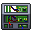
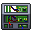
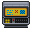
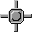

Guide to Engineering
Engineering on Shiptest is pretty similar to station-bound engineering jobs, except it's generally going to be one dedicated engineer, or two, depending on the ship, operating quite a few things, such as
- The combustion/plasma engines and their fuel
- Repairing the vessel from fauna, asteroids, or someone firing an ATGM through the cockpit
- Expanding, or modifying the internal structure of the vessel
- If your on a military vessel, you may also be assigned work on establishing a Forward Operating Base
- Breaching destructible environments via a wide selection of tools
This guide is established to assist you, the player, in the general basics and mechanics behind these concepts.
Alongside all that, if it's your first time engineering, you should apprentice under an at-least-skilled individual who can explain how that specific vessel operates, and the quirks it may have; because some vessel's do have special things to watch, such as a TEG unit.
Unfortunately, I, the person writing this section, cannot explain how that machine works because I have not worked on it myself. A shame, really.
Construction
Almost everything in this section is covered in much better detail within the guide to construction, but the basics will still be covered here for the purpose of being all a new engineer needs to read.
The main form of construction you're most likely to encounter on a ship is that of machines, such as Autolathes, and computers; such as the Helms Console.
The main starting point for this is the humble circuit board, the backbone of almost every machine on your ship. The circuit board itself should tell you what is required to build it with the type of frame necessary to socket it into being in its name, either a machine design or a computer design, and with the stock part requirement for machines being listed upon examining the board itself, even while within a machine frame.
Once you've got your circuit board and needed stock parts you're going to want to place down the board's respective frame, which can be found by using 5 sheets of iron in your hand, and wrench it into place where you want it. For a machine frame , you will need to use a roll of cable coils on it to install the machine's wires. After that, slot in the machine's circuit board and follow it up with the parts required, either by placing them in by hand or using a rapid part exchange device, if your ship has one (do note that some parts have different tiers, with higher tiers generally making a machine run better based on what type of part it is). After all's said and done use a screwdriver on it to finish it.
After that, slot in the machine's circuit board and follow it up with the parts required, either by placing them in by hand or using a rapid part exchange device, if your ship has one (do note that some parts have different tiers, with higher tiers generally making a machine run better based on what type of part it is). After all's said and done use a screwdriver on it to finish it.
Computer frames are slightly simpler and less cumbersome, simply slot the circuit board into the frame, screw it in, add some cables, place 2 pieces of glass in for a screen, and screwdriver it together.
For the sake of building things such as walls and windows, it's advised you check with the guide to construction, but in the event you're in an emergency situation and need to find out how to take apart or put together something like this, you can simply examine said window or wall and the examine text will give you generally obvious hints at what you need to do to progress.
As for deconstruction of walls, Shiptest uses an alternative method for welding down the exterior frame, a much more immersive slicing method. Generally, you can use a welder to cut through standard walls, but for reinforced walls you will want to use a backpack mounted grinder, or the rare and hard to come by plasma-cutter. The prior two mentioned tools have a more advanced version, but these are generally nigh-impossible to retrieve, due to being tied to certain vessel types.
Cables are quite annoying to explain, and the prior version of this guide did not even give a lick of help, instead, please go to Guide to Construction#Power Wires for a basic run-down on wires.
Power Management
Power management is dirt simple in Shiptest!
Making sure power flows generally is a simple task:
- Make sure your generator(s) is fueled
- Upgrade your generator(s) with more powerful stock parts (Better capacitors increase power-per-sheet-of-fuel!)
- Monitor your SMES unit
- Making sure you don't over drain your SMES with ion engines
- Ensuring you don't waste power.
Photovoltaic Panels (Solars)
The most basic, widely usable, but least effective power generation method.
Setting up solars are as easy as pie, you just need a roll of cable, some glass, and a computer frame for a solar tracker console. 
For your first step, you want to make sure you have space for these, then you want to lay a line of cable on the tiles you are going to put your solar panels on, and connect it to the same "grid" as the computer console
After that, you will place a solar panel frame  onto the tile, and wrench it into place. Following this, you will install two glass sheets into these assemblies, except for one, which you will install a solar tracker circuit into.
After this, you will have solar panels , and a single solar tracker , and with your solar tracker console, you will have to sync it and set it to auto.
P.A.C.M.A.N. Generators
As much as it's a simple checklist, in practice, it gains difficulty as you get larger vessels, with some not even using standard generators; of which there are three types. P.A.C.M.A.N.'s  which are powered by sheets of solid plasma, these are the most common to use and find. The second type, is the S.U.P.E.R.P.A.C.M.A.N.,
which are powered by sheets of solid plasma, these are the most common to use and find. The second type, is the S.U.P.E.R.P.A.C.M.A.N., a similar machine to the plasma-fueled version, but instead using uranium. The final, and non-linear version of the generator line is the M.R.S.P.A.C.M.A.N.,
a similar machine to the plasma-fueled version, but instead using uranium. The final, and non-linear version of the generator line is the M.R.S.P.A.C.M.A.N.,  which uses diamonds instead of a standard fuel-type.
which uses diamonds instead of a standard fuel-type.
Now, as for what uses the most power aboard a vessel? Believe it or not, that would be your lights, using roughly 60%[Citation needed] of your vessel's power, not counting ion thrusters.
As for setting up a SMES unit, you'll want to make sure that you set it's input to high, or higher than the power generation, unless you have two, in which you will want to balance it, this is something you will have to setup yourself, and differs between vessel's and how you want to run them.
The Thermoelectric Generator
The Thermoelectric Generator  , or TEG for short, is a large, gas circulating, gas operated method of power generation on very few vessels. It is a very effective, but dangerous power method, if not monitored and managed. This guide, cannot offer advice or support at the current time, and may not ever; it is suggested to learn from other players on how each ship operates their TEG. What this guide can offer instead, is the basic guiding principles of how a TEG operates:
, or TEG for short, is a large, gas circulating, gas operated method of power generation on very few vessels. It is a very effective, but dangerous power method, if not monitored and managed. This guide, cannot offer advice or support at the current time, and may not ever; it is suggested to learn from other players on how each ship operates their TEG. What this guide can offer instead, is the basic guiding principles of how a TEG operates:
- Cold gas enters one half
- Hot gas enters the other half
- These gases exchange their heat, and spin a central turbine
- The spinning mechanical energy is converted into electrical energy.
- Gas is then re-cooled and re-heated
- Gas heating is typically done via a controlled burn
The Supermatter Crystal
This guide cannot offer advice, or anything on how it operates.
Only two vessels have it, the Nanotrasen Heron-Class Dreadnaught, and the Unified Syndicate Twinkleshine-Class Heavy Cruiser; These vessel's do not have guides, and are run on rare occasion.
You are on your own, soldier. Good luck. Serve us proud.
Thrusters

|
The issue with thruster code
Thruster code, is, unfortunatly, esoteric-mercury-in-retrograde-but-only-in-decay-but-if-venus-is-in-hetrograde and is based upon the temperature, kpa, mol's, wind resistance, where the sun is, weather or not the outpost is carp infested, if you like nanotrasen or not. |
Thrusters are the backbone behind Shiptest, and without them, we would be Stationtest. What a scary thought.
Thrusters are split into three types:
- Electric ion thrusters, which take power into a precharger, and pump out ion thrust; these are the most common, but are pretty weak.
- Plasma thrusters, which take highly volatile plasma gas, preheat and burn it via a highly effective process; these engines are being made Nanotrasen exclusive.
- Combustion thrusters take a fuel mix, typically 2:1 hydrogen:oxygen, preheat it then ignite it to produce thrust.
Expanding your thruster collection
Ion Thrusters
Ion thrusters are the weakest, but most stable to use.
These use prechargers, which are small sized SMES units.
There does exist a bug where if you put the output to over 50 Kw, the precharger begins sucking out MILLIONS of MEGAWATTS. Just something to look out for.
Plasma Thrusters
Plasma thrusters are magic machines that eat plasma, and makes it into a good chunk of thrust.
Plasma thrusters have preheaters, which cannot have more than 1010 kPa inside of them before they begin to suffer breakdown, which will result in a leaking plasma spill and the engine going offline.
Plasma is rare, hard to refine to a gas, and can only be bought, or found on waste planets.
Combustion Thrusters
https://github.com/shiptest-ss13/Shiptest/pull/2431
Firstly, combustion thrusters are delicate machines due to their unique function, and therefore come with certain limits to said function.
The specific limit to remember is 1000 kPa, above which your warranty will expire and the combustion heater will begin to take damage, with catastrophic failure inevitable after long periods of high pressure.
The second thing to keep in mind is the fuel mix you are using. If you put in the wrong ratio, the thruster will waste the excess and you'll get less thrust.
The most notable mixes are a 2:1 ratio of hydrogen to oxygen and a 1:1 ratio of plasma to oxygen.
Additionally, nitrous oxide has been known to provide beneficial properties on top of being a potent oxidizer.
It's making scary noises and leaking!
Set your internals, pull a fire alarm, grab a fire suit, and continue with the following steps. Ensure you disable all sources of ignition!
Place two metal sheets over the leak in the heater.
Wrench the new sheets of metal into place to stop the leak.
Pry the insulation layer into place with a crowbar to stop the heat transfer.
For minor damages, tighten loosened screws.
In otherwords: "The actual speed of a combustion is dependent on the gasses inside it and the pressure and temperature and stock parts and whether mercury is in retrograde and decays as you burn it"
The more you look into thruster code the worse it gets. Good luck.
Expansion and Upgrading
So, you want to be a bigshot engineer huh?
Well, let me ground everything first with these core things:
- Rounds are 3 hours long generally, so don't put too much love into your creation
- Asteroids and carp care little for your fancy projects
- Don't go crazy and over design, simple is better
- MAKE SURE YOU HAVE YOUR CAPTAINS PERMISSION
With the four key's out of the way, let's get into the meat and potatoes of how to pull off a nice looking expansion
For this example, we're gonna be installing a medical chamber aboard a Mudskipper-class Salvage Clipper
- Find what you want to install
- Find where you want to install it aboard your ship
- Get your tools
For sake of personal convenience, I am using admin tools to preform this, but you can still do this with the equipment aboard a standard Mudskipper.
I'm going to start by deconstructing the bathroom.
After this, I begin thinking of what I need:
- Metal sheets for flooring
- Because I'm a fan of chemistry counters, I make some plastitanium,
- I'll be making a surgical bed so I need silver.
- I'm not adjusting the cables or the pipes, so I can ignore those.
- And, of course, medical supplies!
With these, I get to work.
I install two tables on the left side, and put a chemistry sink (using plastitanium) for use with ghetto chem in style
But, it's missing something every ship has: Decals.
This is where the decal painter comes into play; printable from the autolathe, this allows you to put most decals on a ship, with a good chunk of customization.
Unfortunately, I am not a decal painter queen, and cannot make some of the amazing things other people make.
Instead, a gallery is below for anyone to add their crazy ship adjustments!
Crazy Ship Modifications Gallery.
-
This guide's mudskipper medical room. (Unless the image is broken?)